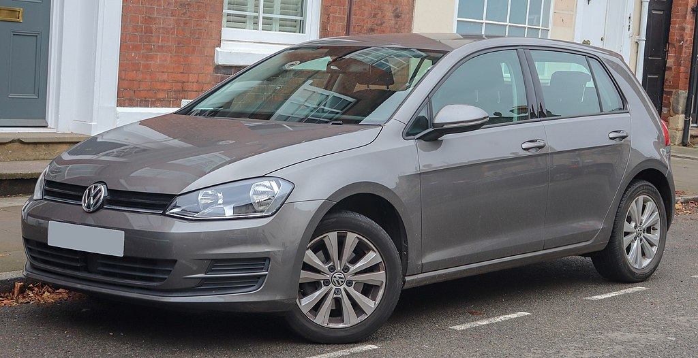

Производство первого Golf’а (внутреннее название Typ 17) началось в 1974 году. В США и Канаде он выпускался под торговой маркой «Volkswagen Rabbit», а в Латинской Америке — «Volkswagen Caribe». Первый дизайн Golf I был разработан итальянским автомобильным дизайнером Джорджетто Джуджаро. Кроме стандартного кузова хетчбэк, Golf I также выпускался в виде кабриолета Golf Cabriolet (Typ 155). Выпуск кабриолетов Golf I растянулся на период с 1980 по 1993 год, вплоть до появления Golf III. Это было связано с тем, что в период, когда производство Golf I уже было остановлено и сменено на Golf II, кабриолет версии Golf II так и не появился. GTI версия Golf I появилась в 1976 году, и международный журнал «Sports Car International» присвоил ей 3-е место среди лучших автомобилей 80-х. Осенью 2009 года Volkswagen прекратил серийный выпуск первого поколения Golf, который осуществлялся в ЮАР. С семидесятых годов этот автомобиль претерпел множество изменений и улучшений практически во всех системах автомобиля, включая салон. Кроме того, в ЮАР этот автомобиль назывался «CitiGolf» и пользовался большим спросом, в основном благодаря доступной цене. За время выпуска первой модели в Германии было произведено около 5 625 000 автомобилей, в том числе порядка 450 000 в версии GTI
С конвейера сошло 6 300 987 хэтчбеков и 1 708 390 седанов Jetta с различной комплектацией. Golf II выпускался не только на заводах Германии, но и во Франции, Нидерландах, Великобритании, Испании, Австрии, Швейцарии, Финляндии, Японии и США. Существует версия внедорожника — Golf Country, насчитывающая более 7 тысяч экземпляров.
Выпускался в Германии с 1991 года по 1997 год. Типы кузовов: трёхдверный и пятидверный хетчбеки, универсал Golf Variant, кабриолет. Впервые представлен широкой публике на Женевском автосалоне 1991 года, в 1992 году удостоился звания «Автомобиль года». С весны 1992 года до окончания выпуска автомобиль продавался в России и странах СНГ, однако его продажи были невелики. В 2000-х годах несколько десятков тысяч автомобилей VW Golf III было ввезено в Россию бывшими в употреблении из европейских стран (Германии, Бельгии, Голландии, Швеции, Швейцарии, Чехии, Испании, Франции, Италии, Португалии и других). Общее количество произведенных автомобилей составило 4 805 900 экземпляров, в том числе 222 626 универсалов.
Выпускался в Германии с 1997 года по 2004 год. Всего выпущено 4 098 000 автомобилей. Golf IV имеет кузова 3- и 5-дверные хэтчбек, универсал, кабриолет. Оснащался четырех и пятицилиндровыми бензиновыми и дизельными моторами мощностью 68–150 л. с. Помимо базовой, существовало четыре основных варианта комплектации: Trendline, Comfortline, Highline и GTI. Модификация GTI оборудована двигателем 1,8 Turbo, а версия Highline имеет V-образную «пятерку» VR5 рабочим объемом 2,3 литра. В 1998 была выпущена версия с полным приводом 4Motion, на которую устанавливается V-образный шестицилиндровый двигатель объемом 2,8 л и мощностью 204 л. с., а также полноприводная трансмиссия 4Motion. Сохранив общие пропорции семейства Golf, Golf IV стал больше. Его длина увеличилась на 131 мм, ширина — на 30 мм, а колёсная база — на 39 мм. Впервые на небольших автомобилях Volkswagen применили кузов, полностью изготовленный из оцинкованной стали. Седан, созданный в 1998 году на платформе Golf IV, на европейском рынке носит имя Bora, а не Jetta IV или Vento II, как можно было бы ожидать. На рынке США седан именуется "Jetta IV".
Создан на платформе Volkswagen Group A5 (PQ35). Впервые был показан на Франкфуртском автосалоне в октябре 2003 года, месяцем позже поступил в продажу.
Создан на платформе Volkswagen Group A5 (PQ35) platform, как и его предшественник Volkswagen Golf V. Был представлен на Парижском автосалоне в октябре 2008 года.
Гольф седьмого поколения был представлен осенью 2012 года на Парижском автосалоне
